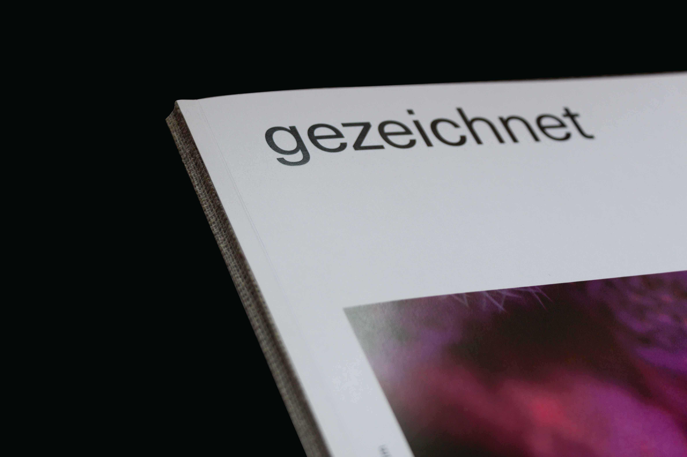
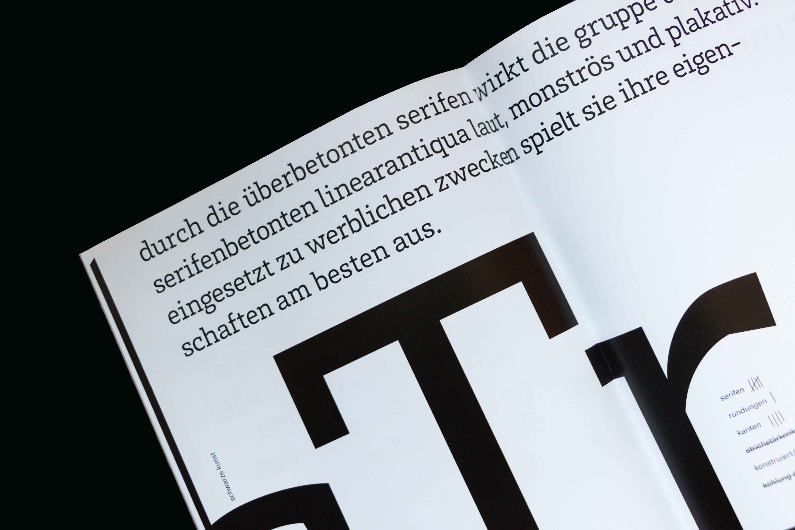
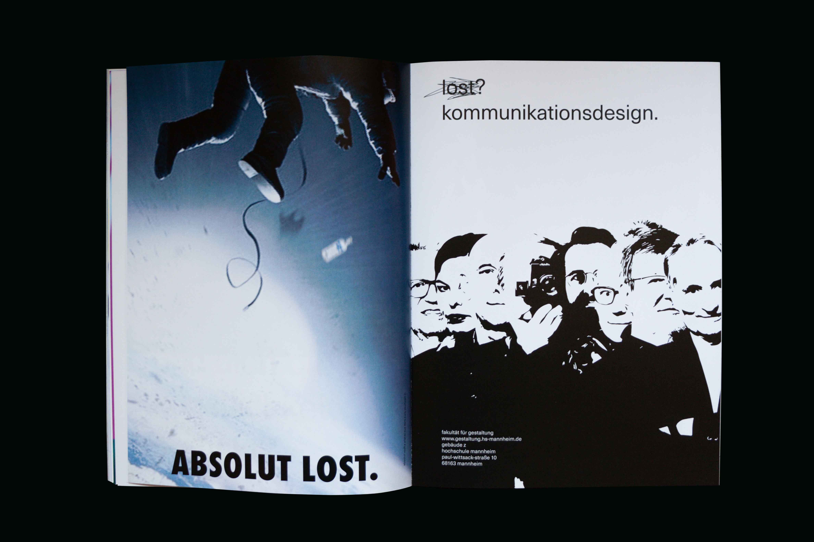
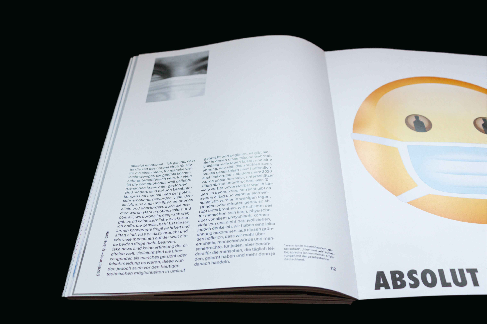

gezeichnet
editorial


gezeichnet
editorial
"gezeichnet" - the magazine and me. striking, surprising, different than expected and thought? my magazine "gezeichnet", from the second semester at the faculty of design became so. and not by fate or by "fake it till you make it".
it was drawn this semester - designed. by hook or by crook, with pencil, with typography and also sometimes with a brooding mood looking into the future. scribbled - first drafts made, also with a bit of chance and the motto 1 + 1 = 3,142. i was allowed to try out, to make new things, to find other solutions and also to start from scratch, no matter if with the eraser, a red cross in the upper right corner or the paper basket. "restart the system" - for the magazine, too: after clarity and factual strictness in the information design, things had to be turned up a notch.


i was drawn. by personal encounters, challenges and quietly sneaking out of the comfort zone. the task was also to keep track of the online jungle of paths and links and to find a balance between the digital and the presence world.
and not only me, was marked that way - all of us, through covid-19, from the unplanned online semesters, but also from cruel images from the world and unhealthy trends. own and society's topics have found a place on the 116 pages in my magazine. what these pages are supposed to do - draw traces yourself, in your brain and in your imagination, they are supposed to stay in your everyday life and in the back of your mind. at a distance, summarized and to be read in my magazine, my semester 2021 was really good.
a project created in the summer semester 2021, about the summer semester 2021, at the faculty of design.